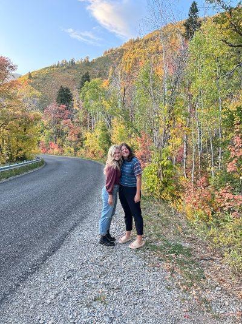

Things are getting serious...
Starting my third year at BYU has been sort of a crazy experience. When did I turn into one of the older kids on campus? How is everyone in all of my classes married? It seems like yesterday I was moving into my dorm at Helaman Halls. College isn't even close to being over for me, yet I still feel like the time is flying by.
But yes, it's true: I'm an Junior in college. And soon enough, I'll be graduated.
To learn more about BYU, my college, visit their website here.